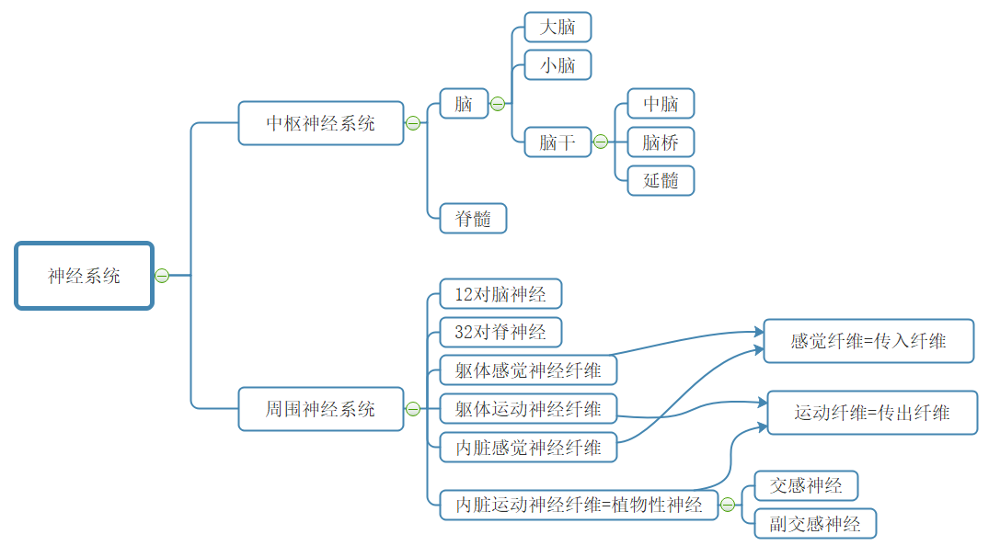
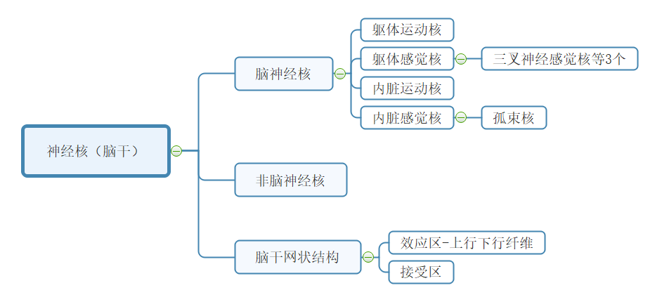
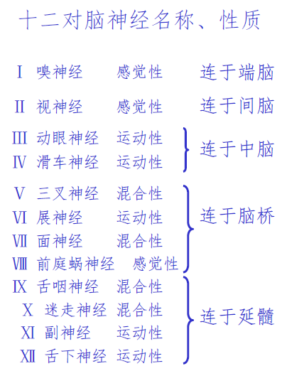
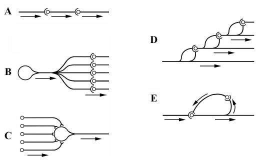
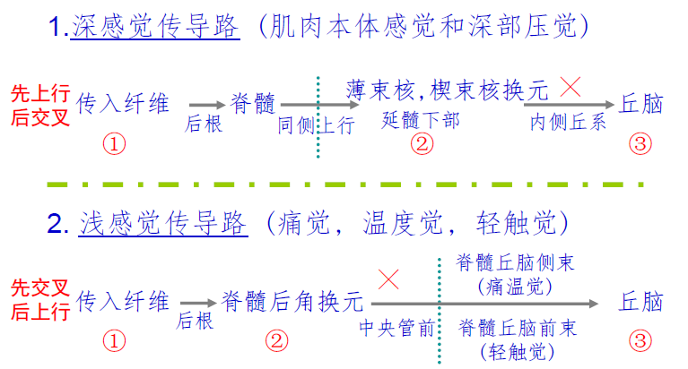
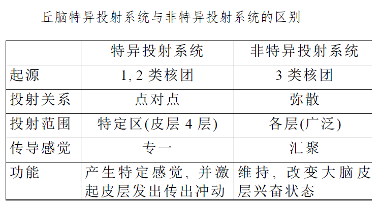
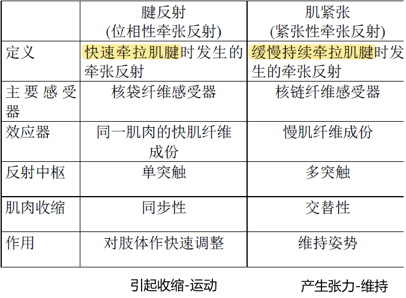
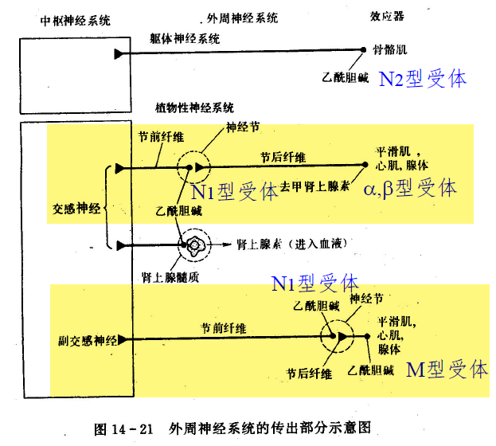

BME | Anatomy - Nervous System
Nervous System
Basic Concepts and Terminology in Overview of the Nervous System
Nervous system/peripheral nervous system/central nervous system/spinal nerves/cranial nerves/somatic nervous system/visceral nervous system/sensory fibers/motor fibers/autonomic nervous system/sympathetic nervous system/parasympathetic nervous system
Gray Matter: A region in the brain and spinal cord where the cell bodies and dendrites of neurons are concentrated. It appears dark due to its rich vascularization in fresh specimens, hence termed gray matter.
White Matter: The region in the brain and spinal cord where nerve fibers (axons + myelin sheaths) are concentrated. The myelin sheaths on the surface of nerve fibers give it a bright appearance, hence called white matter.
Cortex: In the cerebrum and cerebellum, a concentration of gray matter formed by numerous neuronal cell bodies and dendrites on the surface is referred to as the cortex.
Nuclei: In the brain and spinal cord, areas other than the cortex where structurally similar and functionally equivalent neuronal cell bodies and their dendrites are concentrated as gray matter clusters, termed nuclei.
Ganglia: In the peripheral nervous system, regions where structurally similar and functionally equivalent neuronal cell bodies are concentrated are referred to as ganglia.

The primary method by which the nervous system regulates function—reflex activity
Composition of the Nervous System
Gross Anatomical Characteristics, Basic Position, Segments, Ventral and Dorsal Horns, Tract Concepts, and Functions of Major Conduction Bundles in the Spinal Cord
Anatomical Characteristics: Varying in length and thickness, with two enlargements (cervical and lumbosacral, prominent in the human cervical region).
Basic Position: Located within the vertebral canal, connected to the medulla oblongata at the upper end, and the conus medullaris at the lower end. Shorter than the vertebral canal, terminating at the posterior surface of the coccyx.
Segments: Comprise 31 segments, corresponding to 31 pairs of spinal nerves. Each segment of the spine where the nerve root of each spinal nerve connects is a segment. 8 + 12 + 5 + 5 + 1
Gray Matter of the Spinal Cord: H-shaped, with a central canal containing cerebrospinal fluid.
Ventral Horn [Motor]: Contains motor neurons (α neurons - extrafusal muscle - voluntary movement, γ neurons - intrafusal muscle - maintaining muscle tone, Renshaw cells - inhibitory interneurons). Spinal ventral horn motor neurons are the primary centers for reflex arcs of the trunk and limbs, the “final pathway” for various spinal reflex arcs.
Dorsal Horn [Sensory]
Lateral Horn: Pre-ganglionic neurons of the sympathetic nervous system.
White Matter - Conducting Bundles
Ascending Tracts [Sensation]: Impulses from trunk and limb sensory receptors travel through the dorsal roots into the spinal cord, transmitting via ascending fiber tracts to the brain.
Intrinsic Tracts: Connecting different segments of the spinal cord.
Descending Tracts [Movement]: Corticospinal tract (arises from the brain, controls motor neurons of the limbs), etc.
Division of the Brainstem, Reticular Structure of the Brainstem
Brainstem: Midbrain, pons, medulla oblongata. (The medulla oblongata is continuous with the spinal cord below.)
Connections between the cerebral cortex, cerebellum, and spinal cord all pass through the brainstem.

Brainstem Reticular Structure: Fibers crisscross in the central area of the brainstem, containing numerous neuronal cell bodies, collectively forming the brainstem reticular structure. (Function: ascending arousal system, control of internal organ movement).
Lobes of the Cerebral Cortex, Corpus Callosum, Cerebral Cortex/Basal Ganglia, Cerebrospinal Fluid
Corpus Callosum: A fiber plate connecting the two hemispheres. Function: Transferring information from one hemisphere to the other.
Cerebrum divided into 5 lobes: Frontal, Parietal, Occipital, Temporal, Insular
Basal Ganglia (Basal Nuclei): Clusters of gray matter within the cerebral hemisphere’s white matter.
Cerebrospinal Fluid: Produced by the choroid plexus, circulates before returning to the bloodstream.
Blood-Brain Barrier
Brain Barrier = [Blood-Brain Barrier] + [Blood-Cerebrospinal Fluid Barrier] + [Cerebrospinal Fluid-Brain Barrier]
Blood-Brain Barrier: Selective permeability between blood vessels and neurons.
Structural Basis - 3 layers: Tight junctions between endothelial cells of capillaries, the basal lamina of capillaries, glial cell projections forming the glial membrane around capillaries.
Cranial and Spinal Nerves
Origins of Cranial Nerves, Basic Functions of Cranial Nerves

| Olfactory Nerve | Smell |
|---|---|
| Optic Nerve | Vision - Afferent Nerve |
| Oculomotor Nerve | Vision - Efferent Nerve |
| Trochlear Nerve | Vision |
| Trigeminal Nerve | Eye + Upper and Lower Jaw. Chewing + Facial |
| Abducent Nerve | Eye |
| Facial Nerve | Facial Expression Muscles Movement |
| Vestibulocochlear Nerve | Balance + Hearing |
| Glossopharyngeal Nerve | Pharyngeal Muscle Movement |
| Vagus Nerve | Throat Muscle Movement + Sensation |
| Accessory Nerve | Sternocleidomastoid + Trapezius Muscles |
| Hypoglossal Nerve | Tongue Muscle Movement |
Spinal Nerves, Ganglia
Spinal nerves are mixed nerves. Comprising somatic sensory fibers, somatic motor fibers, visceral sensory fibers, and visceral motor fibers.
Anterior Root - Motor Nerve Fibers - Spinal Cord Anterior Horn; Posterior Root - Sensory Nerve Fibers - Spinal Cord Posterior Horn
Spinal Ganglia: Sensory nerve fibers, posterior root.
Activity Patterns of Neurons
Neuronal Function Divisions: Dendrites and Axons (receive input information), Cell Body (integration), Axon (conducting action potentials), Axon terminals (synapses, neurotransmitters)
Axoplasmic Transport: The flow of axoplasm within the axon serves as a transport mechanism. It’s divided into anterograde transport (from cell body to axon) and retrograde transport (from axon to cell body).
Nutritive Function: Continuous release of nutrient factors from the terminals of motor neurons that adjust the intrinsic metabolic activity of effector cells.
Central Neuronal Connectivity: Single-line, divergent (expanding the action space - afferent pathway), convergent (synaptic post-potential integration - efferent pathway), chain, loop.

Synaptic Activity Patterns: Synapses and Their Effects, Characteristics of Synaptic Transmission, Concepts of Neurotransmitters and Receptors
Synapse: A contact point between the terminal of one neuron’s axon and another neuron, transmitting information.
Types of Synapses: Axon-axon/axon-dendrite/axon-cell body; Excitatory synapses/Inhibitory synapses; Chemical synapses/Electrical synapses (gap junctions)
| Excitatory Postsynaptic Potential (EPSP) | Inhibitory Postsynaptic Potential (Postsynaptic Inhibition) | Inhibitory Postsynaptic Potential (Presynaptic Inhibition) | |
|---|---|---|---|
| Presynaptic Membrane Release Neurotransmitter | Excitatory Neurotransmitter | Inhibitory Neurotransmitter | Excitatory Neurotransmitter↓ |
| Postsynaptic Membrane | influx, depolarization | influx, hyperpolarization | influx↓, depolarization↓ |
| Result | Causes Excitatory Postsynaptic Potential (EPSP) | Causes Inhibitory Postsynaptic Potential (IPSP) | Decrease in Excitatory Postsynaptic Potential (EPSP) Amplitude↓ |
Axon Transmission Characteristics: Unidirectional transmission, synaptic delay, summation of synaptic transmission (summation of inhibition & excitation, temporal summation + spatial summation), relative fatigue (ACh release rate > synthesis rate), sensitivity to the internal environment.
Neurotransmitters: Synthesized by neurons, released at nerve endings, specific for action on receptors and producing postsynaptic potentials. (Synthesized in cell body, stored and released at terminals)
Receptors: Special protein structures on the postsynaptic membrane or effector cell membrane. Cholinergic receptors (bind with acetylcholine ACh), adrenergic receptors (bind with norepinephrine NE)
Reflex Activity Patterns: Reflex Concepts, Reflex Arc, Rules of Reflex Activity
Reflex: A response to internal and external stimuli made by the organism’s central nervous system via reflex arcs.
Reflex Arc: Comprises Receptor, Afferent Nerve, Central Nervous System, Efferent Nerve, Effector, five components.
Rules of Reflex Activity:
- Causal Relationship Regularity
- Reciprocal Inhibition: Coordination method - major. Excitation of one center leads to the inhibition of a functionally antagonistic center. (Excitation of A leads to inhibition of B)
- Spread: Coordination method 2. Excitation in one center spreads to other centers via synaptic connections.
- Feedback: Coordination method 3. A) Loop-type synapses - Renshaw cells - Negative feedback inhibition. B) Effector → Receptor
- After-discharge: Stimulus cessation, continued central excitation for a period.
Receptors: Concept and Physiological Features, Referred Pain (Visceral pain causing pain in distant superficial areas)
Sensation Formation: Relies on Receptors, Sensory Pathways, Cerebral Cortical Sensory Areas
Receptors: Special structures that receive stimuli and convert them into nerve impulses.
Physiological Characteristics:
- Suitable Stimulus: The most sensitive stimulus form
- Transduction: Stimulus → Nerve Impulse — summation
- Encoding: Information contained in the stimulus → action potential encoding
- Adaptation Phenomenon: Constant-intensity stimulus → decrease in frequency of sensory nerve fiber action potentials
Referred Pain: Visceral pain causing pain in superficial areas distant from the organ.
Sensory Pathways: Specific and Nonspecific Sensory Conduction Pathways (Characteristics, Thalamus Functions)
Receptor → Specific Sensory Conduction Pathway or Nonspecific Sensory Conduction Pathway → Cerebral Cortex
Specific Sensory Conduction Pathway: Specific nerve tracts that generate specific sensations and stimulate the cerebral cortex with outgoing impulses.

Nonspecific Sensory Conduction Pathway: During the upward transmission, multiple synapses occur with the reticular structure in the brainstem. It doesn’t produce specific sensations, only maintains the excitement of the cerebral cortex neurons.
Both pathways use 1st and 2nd order neurons, differentiating from the brainstem reticular structure.
Thalamic Nuclei: 1st (specific projection), 2nd (association), 3rd (nonspecific projection)

Sensory Analysis Function of the Cerebral Cortex: Layout Characteristics of the Somatosensory 1 Area, Concept of Sensory Columns
Primary Somatosensory Area—Surface Sensation.
Characteristics of Projection of the Cerebral Cortex Sensory Area: — Somatosensory Area 1
- Body Sensation - Contralateral; Head-Face Sensation - Bilateral
- Head and foot inversion, but the head-face is upright
- The size of the projection area depends on the degree of sensory discrimination and is unrelated to the sensory area.
Sensory Column: The longitudinal columnar arrangement of cortical cells constitutes the most basic functional unit of the cerebral cortex.
Regulation Function
Spinal Cord Regulation of Body Movement: Concept and Recovery of Spinal Shock, Motor Units, Final Pathway
Spinal Shock: Occurs when the spinal cord is disconnected from the brain for a period, causing a loss of reflex activity and entering an unresponsive state.
Recovery: Simple (flexor reflex, knee-jerk reflex) → scratch reflex, contralateral extensor reflex → complex (defecation, urination)
Motor Unit: An α-motor neuron and all the muscle fibers it innervates. Skeletal muscle activity is based on motor units.
Final Pathway: The spinal cord anterior horn motor neurons are the primary centers for trunk and limb skeletal muscle reflexes, serving as the final link in various spinal reflex arcs.
Spinal Cord Regulation of Body Movement: Concept and Process of Stretch Reflex
Stretch Reflex: Muscles innervated by nerves are pulled, causing the muscle to contract or generate tension (tendon reflex & muscle tension).
Receptor: Muscle spindle
Stretch Reflex Process: Pulling force → excitation of muscle spindle receptor → type I and type II afferent fibers → spinal gray matter → α fibers → lengthening of extrafusal muscle fibers + (γ motor neuron → intrafusal muscle fibers → type I and type II afferent fibers → α fibers → lengthening of extrafusal muscle fibers)
γ Loop - Muscle Tension - Muscle Contraction Length: γ motor neuron → intrafusal muscle fibers → type I and type II afferent fibers → α fibers → lengthening of extrafusal muscle fibers
α Nerve - Extrafusal Muscle - Muscle Movement;
γ Nerve - Intrafusal Muscle - Adjusts muscle spindle sensitivity, tension

Brainstem Regulation of Body Movement: Decerebrate Rigidity and Its Basic Causes
Decerebrate Rigidity Cause: Due to the disconnection of the motor areas of the cerebral cortex and other areas like the basal ganglia from the functionally linked reticular structure, leading to decreased inhibitory activity in the inhibition zone and increased excitation activity in the facilitation zone, resulting in excessive muscle tension and the appearance of decerebrate rigidity.
Cerebral Regulation of Body Movement: Characteristics of Projection from the Central Precentral Gyrus (Areas 4, 6), Concepts of Pyramidal and Extrapyramidal Systems, Basic Functions of Ancient, Paleocerebellum, and Neocerebellum
The cerebral cortex areas related to movement are two: areas 4 and 6.
Characteristics of Projection from the Central Precentral Gyrus: — Areas 4, 6
- Body Movements — Crossed; Head-Face Muscles — Bilateral motor areas
- Precise functional localization: Head-to-foot inversion, but facial muscles are upright
- The projection area’s size depends on the degree of fine motor skills, not muscle size
- Properly intense stimulation only causes individual muscle contractions
Note the comparison (between motor and sensory areas)
Notable:
| Pyramidal System | Extrapyramidal System | |
|---|---|---|
| Concept | Primary conduit for controlling voluntary movements | Controls muscle tone and coordinates skeletal muscle movements outside the pyramidal system |
| Function | Executes voluntary movements 【Initiates movement】 | Regulates muscle tension, coordination of muscle groups 【Coordinates movement】 |
| Origin | Frontal + Temporal Lobes | Extensive regions of the cerebral cortex |
Significant:
| Ancient Cerebellum - Vestibulocerebellum | Associated with body balance |
|---|---|
| Paleocerebellum - Spinocerebellum | Controls muscle tone, coordinates voluntary movements |
| Neocerebellum - Cerebrocerebellum | Fine motor control |
Sympathetic Ganglion, Characteristics of Sympathetic Distribution, Features of Visceral Motor Neurofunction
Sympathetic Ganglion: Intermediate neurons for exchange.
The soma of the first neuron (preganglionic neuron) is in the spinal cord, sending fibers (preganglionic fibers) away from the spinal cord, forming spinal nerves that terminate at the paravertebral ganglia/prevertebral ganglia, collectively termed the sympathetic ganglion.

Sympathetic Distribution Characteristics:
- Short preganglionic fibers, long postganglionic fibers
- A single preganglionic fiber can excite multiple postganglionic neurons
Features of Visceral Motor Neurofunction:
- Dual neural innervation — antagonistic to each other
- The vegetative central nervous system has a tonic activity — continuously emitting impulses
- Peripheral effects include both inhibitory and excitatory actions
- Relative independence of visceral activities
- Mainly maintaining internal environment stability
- Neurotransmitters and receptors — NE (most post-sympathetic) and ACh (pre-sympathetic, pre/post-parasympathetic, some post-sympathetic)
| Neurotransmitter | Receptor | Effect | Blocker | |
|---|---|---|---|---|
| Sympathetic/Parasympathetic Preganglionic Fiber | ACh | N-type (Nicotinic) | Skeletal muscle contraction | Hexamethonium (N1) Curare (N1, N2) Decamethonium (N2) |
| Parasympathetic Post, Part of Sympathetic Post | ACh | M-type (Muscarinic) | Cardiac muscle - inhibition Gastric smooth muscle - contraction | Atropine |
| Most Sympathetic Post | NE | α | Smooth muscle - mostly excitation | |
| Most Sympathetic Post | NE | β | Smooth muscle - mostly inhibition Cardiac muscle - excitation |
Basic Concepts of Learning and Memory, Conditioned Reflex, Fast-Slow Wave Sleep
Learning and Memory
Learning: Neural activity that affects one’s behavior by receiving external environmental information.
Memory: The process of storing and retrieving learned information.
Conditioned Reflex
Conditions for forming a conditioned reflex: The non-conditioned stimulus is combined with an unrelated stimulus in time, a process known as reinforcement.
Extinction inhibition (conditioned reflex inhibition): After the conditioned reflex is established, repeated application of the conditioned stimulus without reinforcement gradually weakens the conditioned reflex.
Biological significance of conditioned reflex: Gives the organism foresight, flexibility, adaptability.
Sleep
Slow-wave sleep: EEG shows synchronized slow waves.
Rapid eye movement (REM) sleep: Dreaming, rapid eye movements.
(Enters slow-wave first) Slow-wave→REM→Slow-wave→REM→… The later the stage, the longer the REM.
Characteristics of Non-Directed Synaptic Transmission
- No pre-synaptic and post-synaptic differentiation
- Control is 1 : n
- Distant from the effector (>20 nm)
- Time-consuming (>1s)
- Does not always produce effects
Structural basis: Synaptic cleft
Key Points
-
Structural Forms of Synapses — Different forms of synapses between smooth muscle and skeletal muscle — Neuromuscular Junction
-
Different Transmission Forms of Nondirectional Synapses and Skeletal Muscle Synaptic Transmission
-
Similarities and Differences in Autonomous Cells
-
Spinal Shock / Decerebrate Rigidity: What they affect
-
Ganglia: Can be divided into spinal ganglia (responsible for sensation) and abdominal ganglia (sympathetic ganglia - largest visceral ganglia)
-
Pre-ganglionic fibers and post-ganglionic fibers in ganglia
-
Threshold / Action Potential Threshold
-
Excitation-Contraction Coupling: Differences in cardiac and skeletal muscle (refractory period / premature contractions / cardiac muscle exhibits all-or-none)
- Automatic rhythmic contractions: The excitatory source causing cardiac muscle contractions is the heart’s own sinoatrial node, which rhythmically generates excitement causing heart muscle contractions. On the other hand, skeletal muscle contraction’s excitatory source is the central nervous system.
- Strong dependency on extracellular Ca2+ concentration: Cardiac muscle cells have underdeveloped sarcoplasmic reticulum with a small volume and lower stored Ca2+ compared to skeletal muscles. Hence, about 10-20% of the Ca2+ required for the excitation-contraction coupling in cardiac muscles is supplemented by Ca2+ influx from the extracellular fluid. Skeletal muscles have a greater Ca2+ storage capacity in the sarcoplasmic reticulum, hence less affected by changes in extracellular Ca2+ concentration.
- “All or none” synchronous contractions: Due to low resistance intercalated discs, excitation can rapidly spread between cells in cardiac muscles. When excitation reaches the atria or ventricles, it almost simultaneously involves all the atrial or ventricular muscle cells, causing all the atrial or ventricular muscles to contract simultaneously, termed “all-or-none” contraction. However, skeletal muscle excitation cannot directly transmit between cells. Its synchronous contraction can only be triggered by simultaneously firing nerve impulses from different motor neurons and nerve endings. As the excitability of each neuron varies, its synchronous contraction capability is lower.
- Absence of tetanic contraction: After a single excitation in cardiac muscles, there is an exceptionally long refractory period of up to 200 milliseconds. During this period, no stimulation can cause cardiac muscle cells to re-excite or contract again, ensuring the heart does not undergo tetanic contractions, thereby guaranteeing the heart’s filling and ejection functions. In contrast, the effective refractory period for skeletal muscles is only around 2 milliseconds, allowing for the superimposition of successive contractions leading to sustained tetanic contractions in skeletal muscles.
- Different neural control characteristics in contraction: Skeletal muscle contractions are voluntarily controlled and are stronger, whereas cardiac muscle contractions are involuntary but rhythmic.
-
Difference between Central and Peripheral Systems
-
12 pairs of Cranial Nerves
-
Anterior and Posterior Horns of the Spinal Cord
-
Brainstem divisions and functions, how many centers
-
Cardiovascular center, respiratory center
-
Brainstem Reticular Structure: Comprised of numerous nuclei and vital for various physiological activities, secretion, sleep-wake cycles. It has inhibitory and facilitatory areas. - [Specific and nonspecific], [Decerebrate Rigidity]
-
Motor and sensory pathways: Contralateral crossing, directional and nondirectional. Cortical motor area of the brain.
-
Local Excitation-Summation; Differences in action potential
-
Positive and negative feedback
-
Knee-jerk reflex, contralateral extensor reflex
-
Effects of sleep and awakening on the body and viscera: As found in the book, almost half a page
“Most”
- Nervous System: The most complex structure and function in the human body
- Substantia nigra: The largest nucleus in the midbrain
- The most basic reflex center for somatic movement is in the spinal cord
- The most basic activity in the cerebral cortex is signal activity
- Vagus nerve is the longest cranial nerve
- Corticospinal tract: The largest descending conduction bundle in the spinal cord
- Trigeminal nerve: The largest of the twelve pairs of cranial nerves
Textbook Review Questions
- What are the characteristics of the distribution of gray matter in the spinal cord, brainstem, and cerebral cortex? Why is gray matter concentrated on the surface of the brain, and what is its significance?
- Characteristics of gray matter distribution: In the spinal cord and medulla, it’s mainly in the interior, forming continuous columns; in the cerebral cortex and cerebellum, it’s mostly on the exterior forming the surface, buried within the white matter.
- Why does an internal capsule hemorrhage cause hemiplegia and sensory impairment? Explain its anatomical basis.
- How is the cerebellum connected to the medulla, pons, and midbrain?
- Which parts of the brain are connected to the twelve pairs of cranial nerves?
- How are spinal ganglia and sympathetic ganglia similar or different?
- When tapping the patellar tendon with a reflex hammer, in addition to triggering the knee-jerk reflex, we also sense the degree of knee bending. Draw a schematic diagram to illustrate the components of this sensory pathway.
- What is the corticospinal system? What is the extrapyramidal system? Please represent them with simple diagrams.
- Explain the mechanisms behind postsynaptic inhibition and presynaptic inhibition.
- How is the coordination of reflex activities primarily achieved?
- Explain the principles and significance of muscle tone (muscle tension).
- Explain the reflex arcs for the pupillary light reflex and the elbow flexor reflex.
- Pupillary light reflex: Retina → Optic nerve → Optic chiasm → Both optic tracts → Pretectal nuclei → Edinger-Westphal nucleus → Postganglionic fibers → Pupillary constrictor muscle
- Elbow flexor reflex: Skin pain receptor → Spinal gray matter → 1 → Excitatory interneuron → Motor neuron of the flexor (→2 → Excitatory interneuron collateral → Inhibitory interneuron → Motor neuron of the extensor)
- What does the phenomenon of spinal shock demonstrate?
- The spinal cord can perform these simple reflex activities. When normal, they are regulated by higher centers.
- What are the characteristics of the central motor area in controlling somatic movements?
- Cross-control of body movements (contralateral dominance), with most head and facial muscles receiving bilateral innervation.
- Precise functional localization.
- The size of the functional representation area is related to the complexity of the movement.
- Pure muscle movement response obtained from stimulation.
Disclaimer: This blog content is from class notes and is for sharing purposes only. Some images and content are sourced from textbooks, teacher presentations, and the internet. If there is any infringement, please contact aursus.blog